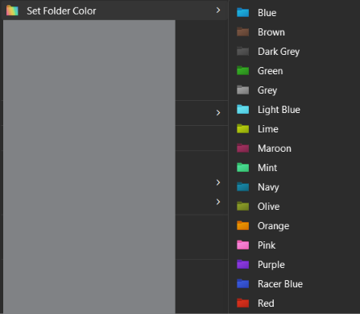
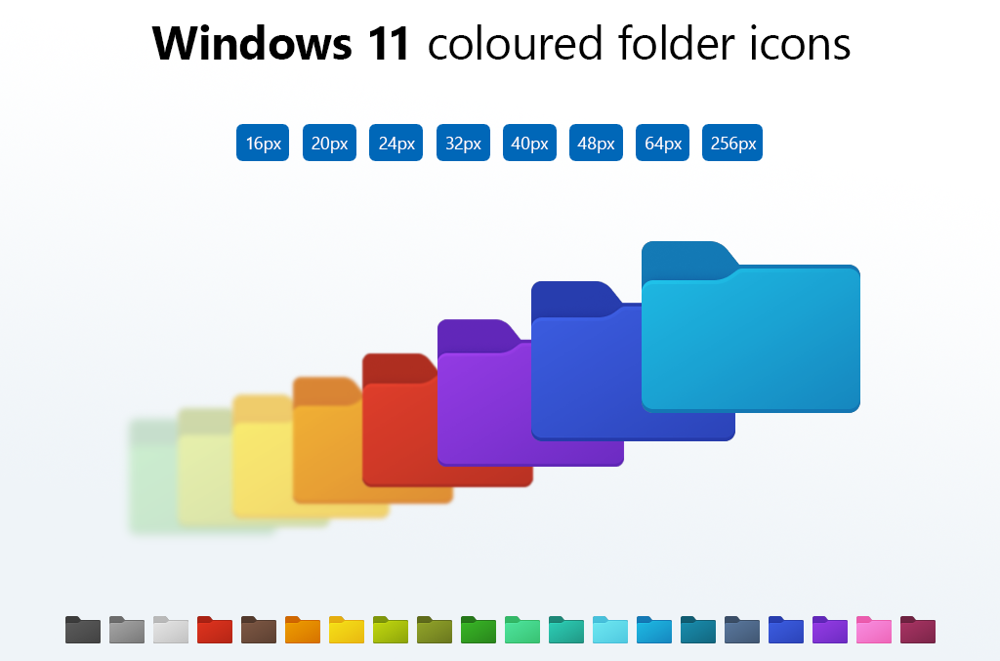

Answer first: to color folders in Windows 11 you need colored icon files, because Windows 11 removed
the color feature Windows 10 had. Folder Colors is a free, open-source shell extension that adds a
Set Folder Color submenu to your right-click menu with 20 colored folder icons. Download the 358 KB zip,
double-click install.cmd, and you're done in about 2 minutes.
What you get

- One menu entry, all 20 colors inside: each item shows its real colored folder icon right in the menu.
- Reset to Default removes the folder's
desktop.iniand restores the standard yellow icon. - Everything lives in the classic full right-click menu on the first click — the installer enables the classic-menu toggle for you.
- Windows 11's compact right-click menu cannot host registry menu entries at all — that is a documented Windows limitation, not a tool one.
- Colors apply instantly: the tool writes the folder's
desktop.ini(the documented Windows mechanism for custom folder icons) in under a second; Explorer refreshes the icon itself a few seconds later.

Windows_11_coloured_icons.icl library — crisp at every Explorer size, 16px to 256px.How to set it up (2 minutes)
C:\Tools\FolderColors\. You can delete or move the extracted folder later (see the warning below).install.cmd inside the extracted FolderColors\ folder. A console shows the progress and pauses at the end. No admin prompt — everything installs per-user to %LOCALAPPDATA%\Programs\FolderColors and the menu is registered immediately.How it works
Explorer right-click
→ registry submenu (HKCU\...\Directory\shell\FolderColorMenu, 20 colors + Reset)
→ FolderColors.exe --run color "<folder>" <index> (hidden native runner)
→ Run-MenuAction.ps1 (hidden PowerShell worker)
→ writes <folder>\desktop.ini (IconResource => stable icon library)
→ SHChangeNotify() → Explorer refreshes the icon
- No console flash: the registry points at a small native exe that spawns PowerShell with window creation disabled — nothing is ever visible.
- No rundll32: older builds popped "Error in shell32.dll — Missing entry: SHChangeNotify_RunDLL" on recent Windows builds; all notify paths now call the SHChangeNotify shell API directly.
- Self-repairing: every install run rebinds colored folders whose icon paths broke after moving or syncing elements.
How it compares
| Folder Colors (this tool) | Folder Colorizer 2 | FolderHue | Manual (Change Icon) | |
|---|---|---|---|---|
| Price | Free, open source | Freemium | Freemium | Free |
| Colors included | 20 | ~11 free | Store-stated 24 | 0 (find your own icons) |
| Apply | Right-click menu | App window | Right-click menu | Properties dialog, 4 clicks |
| Admin rights | No | Yes | No | No |
| Offline / telemetry | Fully offline | Server checks | Microsoft Store app | Fully offline |
| Repair after moves | Automatic | — | — | — |
FAQ
How can I change the color of folders in Windows 11?
Windows 11 removed the color options Windows 10 had, so you need colored icon files. Folder Colors
installs 20 colored folder icons and a Set Folder Color entry in the right-click menu: click a color
and the folder's desktop.ini is rewritten in under a second. Install takes about 2 minutes and needs no admin rights.
What is the best free software to change folder colors?
Folder Colors is free and open source, 358 KB, installs per-user without admin rights, and shows all 20 colors directly in the right-click menu — no separate app window needed. Alternatives like Folder Colorizer or FolderHue are freemium and store-based.
Can I change folder color in Windows 11 without software?
Yes, manually: right-click the folder → Properties → Customize → Change Icon, then pick a colored
.ico file. But Windows 11 ships no colored folder icons, so you must find or make them.
Folder Colors automates exactly this — it writes the same desktop.ini IconResource values, with 20 ready-made icons.
Why doesn't the Set Folder Color entry appear in Windows 11's right-click menu?
The Windows 11 compact right-click menu cannot host registry-based menu entries at all — a Windows limitation. The installer enables the classic context menu, which shows the entry on the first click. Without it, entries live under Show more options, and restarting File Explorer is required after first install.
Does changing folder colors require admin rights?
No. Folder Colors edits only HKEY_CURRENT_USER registry keys and writes to %LOCALAPPDATA%, so everything runs per-user. Windows stores custom folder icons per folder via desktop.ini, and writing desktop.ini only needs write access to that folder.
Is it safe to color folders with desktop.ini?
Yes. Custom folder icons via desktop.ini IconResource are a documented Windows mechanism (linked above). Folder Colors touches nothing else: no system files, no global registry, no DLL injection. Uninstall is one command and recovers the default yellow folder.
Why did my folder color stop working after moving the folder?
desktop.ini stores an absolute path to the icon library. If the installed library moves
(or gets synced by OneDrive), icons break. The extracted download folder can be deleted freely — only the
installed copy at %LOCALAPPDATA%\Programs\FolderColors matters — and re-running the installer
or Repair-FolderColors.ps1 -Apply rebinds every broken path automatically.
Each colored folder's
desktop.ini stores an absolute path to the icon library.
The installed library (%LOCALAPPDATA%\Programs\FolderColors) must never be moved or synced.
The extracted download folder is only a staging copy — moving or deleting it after installing is safe,
because the installed copy is what actually runs. If you ever break icons anyway (renamed library, moved profile, etc.),
either run Repair-FolderColors.ps1 -Apply or simply re-run the installer — it repairs broken paths automatically on every run.
Is it actually working? (the runner is silent on purpose)
- Logs: every action writes a line to
%LOCALAPPDATA%\Programs\FolderColors\app\Logs\menu-action-<date>.log, e.g.[20:56:22] applied index 3 to C:\...\MyFolder. Log lines appearing = the runner is working. - desktop.ini:
Get-Item "<colored folder>\desktop.ini" -Forceshows the icon path. - Timing: the color is applied instantly, but Explorer often shows it a few seconds later (it refreshes icons on its own schedule). F5 inside the folder or restarting Explorer flushes it immediately.
Uninstall
powershell -ExecutionPolicy Bypass -File "%LOCALAPPDATA%\Programs\FolderColors\ps1\Uninstall-FolderColors.ps1"Removes all menu keys and the installed folder. Folders you already colored keep their desktop.ini until you reset them — run Reset to Default before uninstalling if you want them clean.
Troubleshooting (quick view)
| Symptom | Fix |
|---|---|
| Menu missing entirely | Restart Explorer; re-run install.cmd. |
| Entry only under “Show more options” | Classic menu toggle not set — reinstall (install.cmd sets it) or restore it manually. |
| Color doesn't appear | Wait a few seconds / F5 / restart Explorer. If still nothing, check the library exists at the installed path and look at the log. |
| “Error in shell32.dll / Missing entry” popup | You're running an old copy. Delete it and reinstall — current build has no rundll32 usage. |
Antivirus quarantines FolderColors.exe | False positive on an unsigned self-built exe. Add exclusions for %LOCALAPPDATA%\Programs\FolderColors, restore the file, done. |